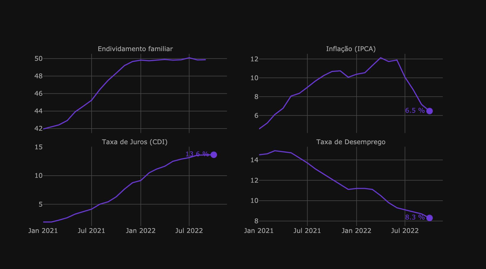

from bcb import sgs
from bcb import Expectativas, sgs
from plotly.subplots import make_subplots
import pandas as pd
import plotly
import plotly.graph_objects as go
import plotly.express as px
from datetime import datetime
import plotly.io as plt_io
# create our custom_dark theme from the plotly_dark template
plt_io.templates["custom_dark"] = plt_io.templates["plotly_dark"]
# set the paper_bgcolor and the plot_bgcolor to a new color
plt_io.templates["custom_dark"]['layout']['paper_bgcolor'] = '#111111'
plt_io.templates["custom_dark"]['layout']['plot_bgcolor'] = '#111111'
#plt_io.templates["custom_dark"]['layout']['font']['size'] = 12
color_pallet = ("#6A38D4",) + plt_io.templates["custom_dark"]['layout']['colorway']
plt_io.templates["custom_dark"]['layout']['colorway'] = color_pallet
plt_io.templates["custom_dark"]['layout']['title']['font']['color'] = '#A6A5A5'
# you may also want to change gridline colors if you are modifying background
plt_io.templates['custom_dark']['layout']['yaxis']['gridcolor'] = '#4A4A4A'
plt_io.templates['custom_dark']['layout']['xaxis']['gridcolor'] = '#4A4A4A'
plt_io.templates['custom_dark']['layout']['font']['color'] = '#A6A5A5'
custom_template = {
"layout": go.Layout(
font={
#"family": "Open Sans",
"size": 12,
"color": "#707070",
},
title={
"font": {
#"family": "Open Sans",
"size": 18,
#"color": "#1f1f1f",
"color": "#6A38D4",
},
},
plot_bgcolor="#555050",
paper_bgcolor="#555050",
#plot_bgcolor="#FFFFFF",
#paper_bgcolor="#FFFFFF",
#colorway=["#6A38D4"] + px.colors.qualitative.G10
colorway=["#9A6EF8"] + px.colors.qualitative.G10
)
}
def format_title(title, subtitle=None, subtitle_font_size=14):
title = f'<b>{title}</b>'
if not subtitle:
return title
subtitle = f'<span style="font-size: {subtitle_font_size}px;">{subtitle}</span>'
return f'{title}<br>{subtitle}'
def series_pct_format(series, prec=2):
return series.apply(lambda x: '{0:.{pre}f}%'.format(x, pre=prec))
template = "plotly_dark"highlight-style: ayu-dark
|— format: revealjs: logo: “../../images/logo_grey.png” theme: [dark, “../../assets/slides.scss”] echo: false slide-number: true footer: “www.fintechscientist.com (por Marcus Silva)”
description: “Variáveis Macro para análise de risco de crédito” author: “Marcus O. Silva” date: “12/10/2022”
code-block-bg: true code-block-border-left: “#31BAE9”
Buscando os indicadores macroeconômicos do Bacen em python
# instale a lib do Bacen
!pip install python-bcbseries = {
# <descrição da série>: <código da série>
'Endividamento familiar': 29037,
'Inflação (IPCA)': 13522,
'Taxa de Juros (CDI)': 4392,
'Taxa de Desemprego': 24369,
}
# Carregando as variáveis
df = sgs.get(series, start='2021-01-01')Acesse o sistema de séries temporais do BACEN para consultar as definições dessas séries: aqui
df_p = df.reset_index()
df_p = df_p.melt(value_vars=df.columns, id_vars=['Date'],
var_name="indicator",
value_name="value")
df_p = df_p[df_p.Date <= '2022-10-01']Plot dos Indicadores macroeconômicos
def series_pct_format(series, prec=2):
return series.apply(lambda x: '{0:.{pre}f}%'.format(x, pre=prec))
fig = px.line(df_p, x='Date', y="value", title=format_title("", ''),
template='custom_dark', height=500, width=900,
facet_col="indicator", facet_col_wrap=2,
facet_row_spacing=0.08,
facet_col_spacing=0.08,
)
fig.for_each_annotation(lambda a: a.update(text=a.text.split("=")[1]))
fig.update_xaxes(title='')
fig.update_yaxes(title='')
fig = fig.update_yaxes(matches=None, showticklabels=True)
#fig.for_each_annotation(lambda a: a.update(text=a.text.split("=")[-1]))
#fig.update_traces(textposition='top center')
#fig.update_layout(yaxis_range=[1.6, 2.4])
#fig.for_each_trace(
# lambda trace: trace.update(marker_symbol="square") if trace.y == else (),
#)
#fig.add_vline(df_p.Date.max(), row=1,col=1)
#fig.add_annotation(2, x=df_p.Date.max(), row=1,col=1)
#fig.add_trace(go.Scatter(...), row='all', col='all', exclude_empty_subplots=True)
#fig.add_annotation
#fig.fo
#fig.update_traces(textposition='top center')
# add traces for annotations and text for end of lines
for i, d in enumerate(fig.data):
row = (2+1) - int(i / 2 + 1)
column = int(i % 2 + 1)
#print('i:', i, 'd:', d)
fig.add_scatter(x=[d.x[-1]], y = [d.y[-1]],
mode = 'markers+text',
text = str(round(d.y[-1],1)) + ' %',
textfont = dict(color=d.line.color),
#textfont = dict(color=d.line.color),
textposition='middle left',
marker = dict(color = d.line.color, size = 12),
legendgroup = d.name,
showlegend=False, row=row,col=column)
#fig.show()
img_bytes = fig.to_image(format="png", scale=2)
from IPython.display import Image
Image(img_bytes)